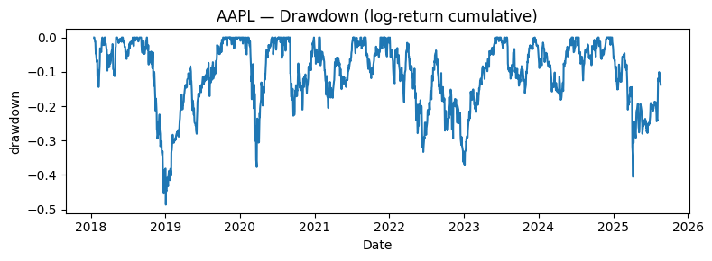
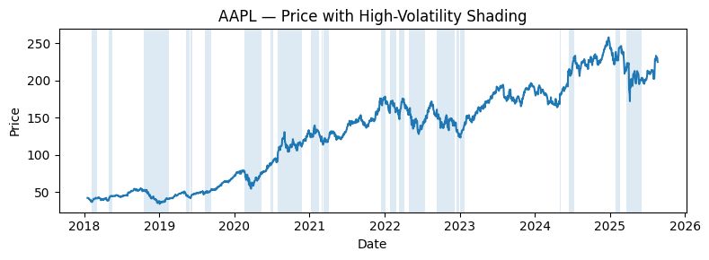
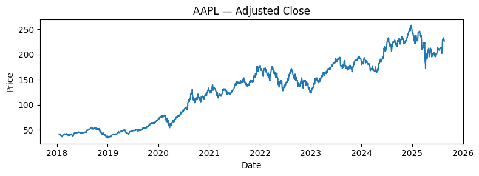
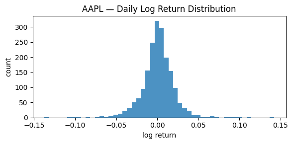
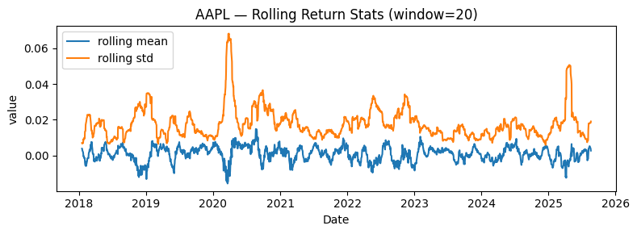

# Colab cell
from google.colab import drive
drive.mount('/content/drive', force_remount=True)Mounted at /content/driveMounted at /content/drive# Adjust these two for YOUR repo
REPO_OWNER = "ywanglab"
REPO_NAME = "STAT4160" # e.g., unified-stocks-team1
BASE_DIR = "/content/drive/MyDrive/dspt25"
CLONE_DIR = f"{BASE_DIR}/{REPO_NAME}"
REPO_URL = f"https://github.com/{REPO_OWNER}/{REPO_NAME}.git"
import os, pathlib
pathlib.Path(BASE_DIR).mkdir(parents=True, exist_ok=True)import os, subprocess, shutil, pathlib
if not pathlib.Path(CLONE_DIR).exists():
!git clone {REPO_URL} {CLONE_DIR}
else:
# If the folder exists, just ensure it's a git repo and pull latest
os.chdir(CLONE_DIR)
# !git status
# !git pull --rebase # !git pull --ff-only
os.chdir(CLONE_DIR)
print("Working dir:", os.getcwd())Working dir: /content/drive/MyDrive/dspt25/STAT4160import pandas as pd
import numpy as np
import matplotlib.pyplot as plt
import yfinance as yf
from pathlib import Path
from datetime import datetime
#| tags: [parameters]
# Default values (overridden by -P at render time)
symbol = "AAPL"
start_date = "2018-01-01"
end_date = "" # empty means "open ended"
rolling = 20
# Read parameters
# SYMBOL = params.get("symbol", "AAPL")
# START = params.get("start_date", "2018-01-01")
# END = params.get("end_date", "")
# ROLL = int(params.get("rolling", 20))
SYMBOL = "AAPL"
START = "2018-01-01"
END = ""
ROLL = 20
if not END:
END = pd.Timestamp.today().strftime("%Y-%m-%d")
SYMBOL, START, END, ROLL('AAPL', '2018-01-01', '2025-08-22', 20)# Fetch adjusted OHLCV
try:
data = yf.download(SYMBOL, start=START, end=END, auto_adjust=True, progress=False)
except Exception as e:
print("yfinance failed, falling back to synthetic series:", e)
idx = pd.bdate_range(START, END)
rng = np.random.default_rng(42)
ret = rng.normal(0, 0.01, len(idx))
price = 100 * np.exp(np.cumsum(ret))
vol = rng.integers(1e5, 5e6, len(idx))
data = pd.DataFrame({"Close": price, "Volume": vol}, index=idx)
# Tidy & features
df = data.rename(columns=str.lower).copy()
df = df[["close","volume"]].dropna()
df["log_return"] = np.log(df["close"]).diff()
df["roll_mean"] = df["log_return"].rolling(ROLL, min_periods=ROLL//2).mean()
df["roll_vol"] = df["log_return"].rolling(ROLL, min_periods=ROLL//2).std()
df = df.dropna()
df.head()| Price | close | volume | log_return | roll_mean | roll_vol |
|---|---|---|---|---|---|
| Ticker | aapl | aapl | |||
| Date | |||||
| 2018-01-17 | 41.984413 | 137547200 | 0.016381 | 0.003894 | 0.007023 |
| 2018-01-18 | 42.021935 | 124773600 | 0.000893 | 0.003621 | 0.006724 |
| 2018-01-19 | 41.834400 | 129700400 | -0.004473 | 0.002947 | 0.006823 |
| 2018-01-22 | 41.492134 | 108434400 | -0.008215 | 0.002088 | 0.007229 |
| 2018-01-23 | 41.501522 | 130756400 | 0.000226 | 0.001955 | 0.006963 |
# Add to the "Tidy & features" section in eda.qmd
df["cum_return"] = df["log_return"].cumsum().fillna(0.0)
peak = df["cum_return"].cummax()
df["drawdown"] = df["cum_return"] - peak
# Regime via rolling volatility terciles
vol = df["log_return"].rolling(ROLL, min_periods=ROLL//2).std()
q1, q2 = vol.quantile([0.33, 0.66])
def regime(v):
if np.isnan(v): return "mid"
return "low" if v < q1 else ("high" if v > q2 else "mid")
df["regime"] = [regime(v) for v in vol]
df["regime"].value_counts().to_frame("days").T| regime | high | mid | low |
|---|---|---|---|
| days | 646 | 637 | 627 |
# Drawdown plot
fig, ax = plt.subplots(figsize=(8,3))
ax.plot(df.index, df["drawdown"])
ax.set_title(f"{SYMBOL} — Drawdown (log-return cumulative)")
ax.set_xlabel("Date"); ax.set_ylabel("drawdown")
fig.tight_layout()
figpath = Path("reports/figs")/f"{SYMBOL}_drawdown.png"
fig.savefig(figpath, dpi=144)
figpathPosixPath('reports/figs/AAPL_drawdown.png')
# Price with regime shading (simple)
fig, ax = plt.subplots(figsize=(8,3))
ax.plot(df.index, df["close"])
ax.set_title(f"{SYMBOL} — Price with High-Volatility Shading")
ax.set_xlabel("Date"); ax.set_ylabel("Price")
# Shade where regime == 'high'
mask = (df["regime"] == "high")
# merge contiguous regions
in_region = False
start = None
for i, (ts, is_high) in enumerate(zip(df.index, mask)):
if is_high and not in_region:
in_region = True
start = ts
if in_region and (not is_high or i == len(df)-1):
end = df.index[i-1] if not is_high else ts
ax.axvspan(start, end, alpha=0.15) # shaded band
in_region = False
fig.tight_layout()
figpath = Path("reports/figs")/f"{SYMBOL}_price_regimes.png"
fig.savefig(figpath, dpi=144)
figpathPosixPath('reports/figs/AAPL_price_regimes.png')
fig, ax = plt.subplots(figsize=(8,3))
ax.plot(df.index, df["close"])
ax.set_title(f"{SYMBOL} — Adjusted Close")
ax.set_xlabel("Date"); ax.set_ylabel("Price")
fig.tight_layout()
figpath = Path("reports/figs")/f"{SYMBOL}_price.png"
fig.savefig(figpath, dpi=144)
figpathPosixPath('reports/figs/AAPL_price.png')
fig, ax = plt.subplots(figsize=(6,3))
ax.hist(df["log_return"], bins=50, alpha=0.8)
ax.set_title(f"{SYMBOL} — Daily Log Return Distribution")
ax.set_xlabel("log return"); ax.set_ylabel("count")
fig.tight_layout()
figpath = Path("reports/figs")/f"{SYMBOL}_hist.png"
fig.savefig(figpath, dpi=144)
figpathPosixPath('reports/figs/AAPL_hist.png')
fig, ax = plt.subplots(figsize=(8,3))
ax.plot(df.index, df["roll_mean"], label="rolling mean")
ax.plot(df.index, df["roll_vol"], label="rolling std")
ax.set_title(f"{SYMBOL} — Rolling Return Stats (window={ROLL})")
ax.set_xlabel("Date"); ax.set_ylabel("value")
ax.legend()
fig.tight_layout()
figpath = Path("reports/figs")/f"{SYMBOL}_rolling.png"
fig.savefig(figpath, dpi=144)
figpathPosixPath('reports/figs/AAPL_rolling.png')
summary = pd.DataFrame({
"n_days": [len(df)],
"start": [df.index.min().date()],
"end": [df.index.max().date()],
"mean_daily_ret": [df["log_return"].mean()],
"std_daily_ret": [df["log_return"].std()],
"ann_vol_approx": [df["log_return"].std()*np.sqrt(252)]
})
summary| n_days | start | end | mean_daily_ret | std_daily_ret | ann_vol_approx | |
|---|---|---|---|---|---|---|
| 0 | 1909 | 2018-01-17 | 2025-08-20 | 0.00089 | 0.019685 | 0.312487 |